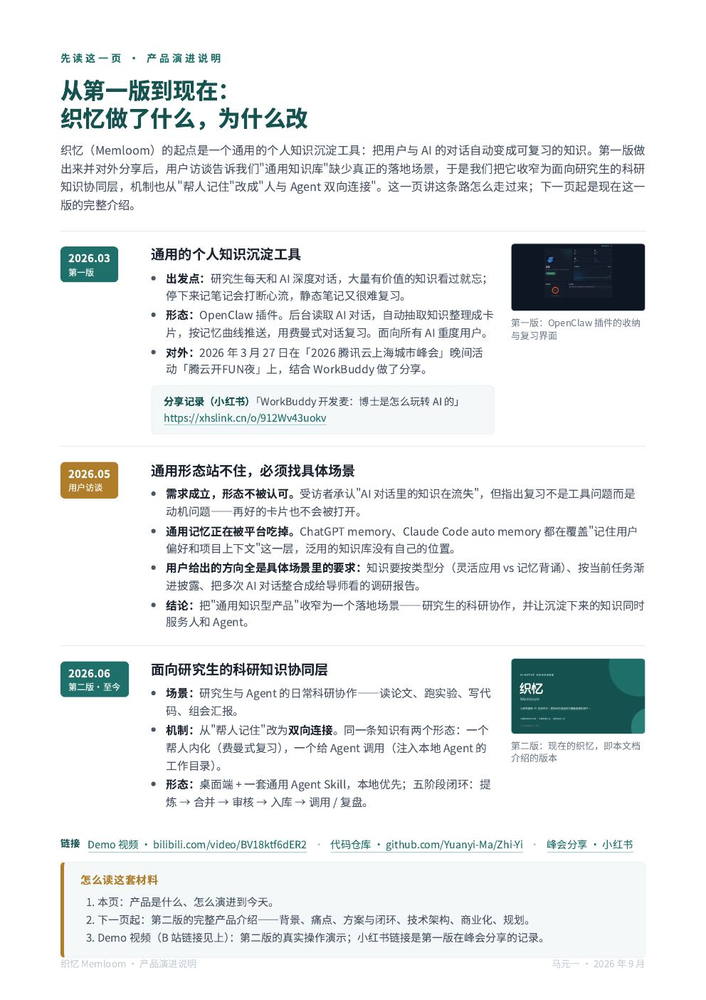
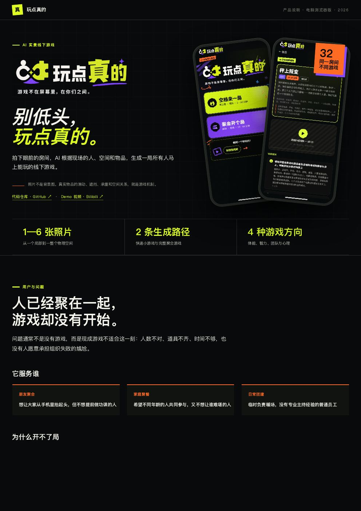
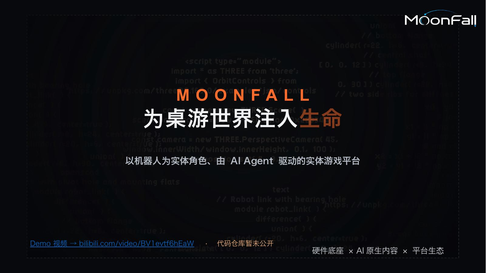

人和自己 AI 之间的知识治理层：AI 找候选、人判价值
人和自己 AI 之间的双向知识层。AI 从日常对话流里抽取候选知识，人做价值判断（人审门）；每条经确认的知识同时产出「人用版」（机制、边界、例子）和「Agent 用版」（规则、约束、调用条件），两版不漂移。


让创作者带自己的 AI 做“桌面会自己动”的桌游的通用框架
把 Agent 注入实体桌游，再把桌游抽象为一套通用框架：小车、机械臂、视觉定位、多 Agent 决策封在引擎里，创作者带自己的 AI 只写一份游戏定义文件，就能做出一款“桌面自己会动”的桌游；同一份定义换一份绑定档案还能跑成纯软件版。
Agent 间不可信协作的可验证、可挑战、可结算协议
AI Agent 的可信专业资料网络：用户侧 Agent 在授权预算内，付费委托持有订阅资料库授权的“领域专家 Agent”，拿回一份可验证、可挑战、可结算的研究简报——每条结论落到具体来源的具体段落。它不是让人逛的电商，是 Agent 工作流中的一层基础设施。
万象记
面向个人通用 Agent 的记录系统。图片、文字、语音、文件随手发给 AI，AI 判断这些内容该进哪个小程序、最少追问补齐必要信息，最后结构化沉淀到本地。
LookCare
拍一张照片，给你一份敢照着做的形象管理方案。
SCIYard
每篇论文都该有它的来世。
私募投研系统
每个数字带来源、带口径、过反方质询。